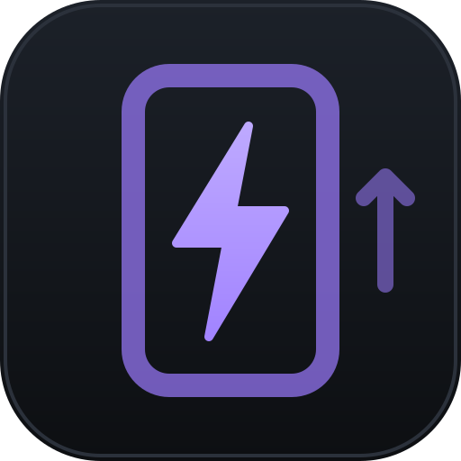
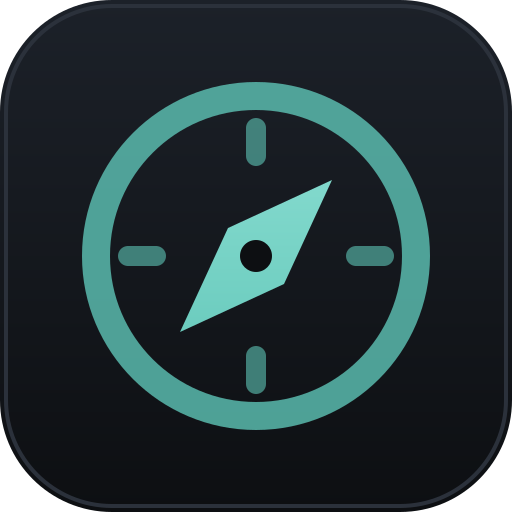
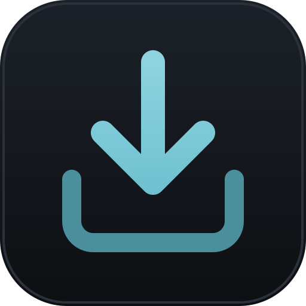

为酒店、机场和飞机而生
一切都在这台路由器上运行。你的设备连到一个完全属于你的网络，其余的事交给它。
一次登录，人人可用
只要一个人在酒店的条款页面点同意，所有手机、笔记本和平板就都能上网。不用按设备付费。
自动重连
记住用过的网络并自动重新连接。插上房间里的网线，就会优先走有线网络。
没网也能用的应用
在热点上和朋友打牌、旅行知识问答、文字冒险、电影、文件共享、离线版 Wikivoyage，还有内置在路由器里的语言模型。
你的家庭 VPN
粘贴一份 WireGuard 配置，所有流量都会经过它。酒店只能看到加密后的流量。
设备与流量
查看谁在线、每个网络用了多少流量。给通宵放视频的平板按个暂停。
最小权限
管理面板通过一个只能修改 Wi-Fi 设置的账号来控制路由器，从不使用 root。
开箱到热点，大约半小时
选择你的路由器。边做边勾选步骤：这个页面会记住你的进度。
-
准备硬件
NanoPi R6S, 8 GB 主机本体。选带金属外壳的版本：外壳就是散热片。 USB Wi-Fi 网卡 × 2 R6S 本身没有 Wi-Fi。只能用 MediaTek 芯片的网卡：例如热点用 ALFA AWUS036ACM（MT7612U），连酒店网络用 AWUS036ACHM（MT7610U）。 5 V / 3 A USB-C 电源 或者支持 USB-C PD 的充电宝。 8 GB 以上的 microSD 卡 只在刷机时用一次。 短 USB 延长线 可选。让其中一个网卡离外壳远一点。 -
把 FriendlyWrt 刷入 eMMC
FriendlyWrt 是 FriendlyElec 基于 OpenWrt 定制的系统，内置 Docker。
- 打开 FriendlyElec 的下载页面 →
01_Official images→02_SD-to-eMMC images，下载文件名类似rk3588-eflasher-friendlywrt-…-docker-….img.gz的文件。请选文件名里带docker的那个。 - 用 balenaEtcher 把它写入 microSD 卡（可以直接用
.gz文件）。在 Windows 上，FriendlyElec 推荐的工具是 Win32 Disk Imager：需要先解压镜像。 - 把卡插进 R6S 并通电，它会自动安装到 eMMC。留意红色的 SYS 指示灯：
快闪正在安装，需要几分钟 慢闪 + 绿灯完成：SYS 慢闪，WAN/LAN 灯常亮- 拔掉电源，取出存储卡，再重新通电。现在它会从 eMMC 启动。
- 打开 FriendlyElec 的下载页面 →
-
登录一次并连上网络
- 把笔记本接到标有 LAN 的网口，再用一根网线把家里的路由器接到标有 WAN 的网口。
- 打开 http://192.168.2.1。用户名
root，密码password（有些版本留空即可）。 - 设置你自己的 root 密码：System → Administration。这个密码只归你所有；AirplaneMode 会使用自己的受限账号。
-
插上 Wi-Fi 网卡
把热点用的网卡（AWUS036ACM）插到蓝色的 USB 3.0 口，另一个插到 USB 2.0 口。这时在 LuCI 的 Network → Wireless 里应该能看到两个无线设备。不用手动设置：管理面板会搞定。
-
运行安装程序
打开终端（Windows 上用 PowerShell，Mac 上用“终端”），用
ssh root@192.168.2.1连接，然后粘贴下面的命令。它会检查路由器、安装所有组件（约 3.8 GB），最后显示你的管理员密码。 -
给热点起个名字
打开 http://airplane.mode:8080/admin/，用安装程序显示的密码登录，然后给热点设好名称和密码。之后无论走到哪里，你的设备都会记住它。
-
确认型号
你需要一台 arm64 的 GL.iNet（例如 Flint 2 / GL-MT6000），带 1 GB 内存，外加一个 8 GB 或更大的 U 盘或 SD 卡给 Docker 用。较老的 MIPS 型号不行。
-
联网并打开命令行
在路由器的管理面板（http://192.168.8.1）里把它连上互联网。然后在终端里执行
ssh root@192.168.8.1，密码就是管理面板的密码。 -
安装 Docker
挂载 U 盘或 SD 卡（GL.iNet 管理面板 → Applications → Network Storage），然后运行：
# opkg update && opkg install dockerd docker docker-compose把 Docker 的数据目录指向 U 盘或 SD 卡（
data_root，位于/etc/config/dockerd），再用/etc/init.d/dockerd restart启动它。不同固件版本的软件包名可能不同。 -
运行安装程序
把它粘贴到同一个命令行里。它会检查路由器、安装所有组件，最后显示你的管理员密码。
-
给热点起名，并只用一种中继方式
打开 http://airplane.mode:8080/admin/ 并登录。GL.iNet 有自己的中继页面，也会修改上游 Wi-Fi，所以它和 AirplaneMode 的 Internet source 面板只能二选一，不要同时使用。
万米高空的消遣
目前共有十款应用。每一款都是独立的开源项目，以容器形式接入。
The Dark Light
由内置语言模型讲述的文字冒险，可以单人玩，也可以大家用各自的手机组队：漆黑的灯塔、冰封的山口，还有雾气笼罩的沼泽。
游戏 · 使用语言模型（GL.iNet 不支持）Gate Change
节奏飞快的颜色加数字纸牌游戏，支持 2 到 8 人。在热点上用各自的手机和朋友对战，或者和机器人玩。
游戏Passport
旅行主题的卡组构筑纸牌游戏。在热点上和朋友或机器人比拼，收集印章和签证。
游戏Wayfarer
取材自 Travel Guide 的旅行知识问答：首都、货币、机场代码、常用短语。每日航班、无尽模式、最高分。
游戏Doom
经典射击游戏，用触屏直接在你的设备上玩。可以玩 Freedoom、机场主题的 Layover 章节，或者从 Drop 载入你自己的 WAD。
游戏Cinema
观看传到 Drop 上的电影和剧集，播放音乐。每台设备都能从上次停下的地方接着看。
娱乐
QuickShot
Drop 里 QuickShot 文件夹中短视频的无限信息流。滑动、点赞、评论。
娱乐The Couch
心理治疗师模拟器：和六位治疗师中的一位聊聊心事，从温柔的“共情者”到爱开玩笑的“自恋者”，都由内置语言模型扮演。这不是真正的心理治疗。
娱乐 · 使用语言模型（GL.iNet 不支持）
Travel Guide
离线版的完整 Wikivoyage。查任何目的地，或者提个问题，从指南里得到答案。
旅行 · 使用语言模型（GL.iNet 不支持）
Drop
在热点上的所有手机、平板和笔记本之间传送文件和便签，还能存几部电影留着飞机上看。
工具